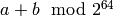
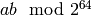
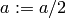
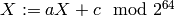
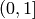

Parallel LCG¶
Since it is often necessary to generate a large matrix with pseudo-random entries in parallel, a method for ensuring that a large set of processes can each generate independent uniformly random samples is required. The purpose of Parallel LCG (PLCG) is to provide a provably independent generalization of a simple (but well-studied) Linear Congruential Generator. Knuth’s constants from The Art of Computer Programming Vol. 2 are used.
The prototypes can be found in include/elemental/imports/plcg.hpp, while the implementations are in external/plcg/parallel_lcg.cpp.
Datatypes¶
- type plcg::UInt32¶
Since the vast majority of modern systems make use of unsigned for storing 32-bit unsigned integers, we simply hardcode the type. If your system does not follow this convention, then this typedef will need to be changed!
- type struct plcg::UInt64¶
A custom 64-bit unsigned integer which is simply the concatenation of two 32-bit unsigned integers (UInt32).
- type struct plcg::ExpandedUInt64¶
A custom 64-bit unsigned integer which is stores each of the four 16-bit pieces within the first 16 bits of a 32-bit unsigned integer. This is done so that two such expanded 16-bit numbers can be multiplied without any chance of overflow.
LCG primitives¶
- plcg::UInt32 plcg::Lower16Bits(plcg::UInt32 a)¶
Return the lower 16 bits of a in the lower 16 bits of the returned 32-bit unsigned integer.
- plcg::UInt32 plcg::Upper16Bits(plcg::UInt32 a)¶
Return the upper 16 bits of a in the lower 16 bits of the returned 32-bit unsigned integer.
- plcg::ExpandedUInt64 plcg::Expand(plcg::UInt32 a)¶
Expand a 32-bit unsigned integer into a 64-bit expanded representation.
- plcg::ExpandedUInt64 plcg::Expand(plcg::UInt64 a)¶
Expand a 64-bit unsigned integer into a 64-bit expanded representation.
- plcg::UInt64 plcg::Deflate(plcg::ExpandedUInt64 a)¶
Deflate an expanded 64-bit unsigned integer into the standard 64-bit form.
- void plcg::CarryUpper16Bits(plcg::ExpandedUInt64& a)¶
Carry the results stored in the upper 16-bits of each of the four pieces into the next lower 16 bits.
- plcg::ExpandedUInt64 plcg::AddWith64BitMod(plcg::ExpandedUInt64 a, plcg::ExpandedUInt64 b)¶
Return .
- plcg::ExpandedUInt64 plcg::MultiplyWith64BitMod(plcg::ExpandedUInt64 a, plcg::ExpandedUInt64 b)¶
Return .
- plcg::ExpandedUInt64 plcg::IntegerPowerWith64BitMod(plcg::ExpandedUInt64 x, plcg::ExpandedUInt64 n)¶
Return
 .
.
- void plcg::Halve(plcg::ExpandedUInt64& a)¶
.
- void plcg::SeedSerialLcg(plcg::UInt64 globalSeed)¶
Set the initial state of the serial Linear Congruential Generator.
- void plcg::SeedParallelLcg(plcg::UInt32 rank, plcg::UInt32 commSize, plcg::UInt64 globalSeed)¶
Have our process seed a separate LCG meant for parallel computation, where the calling process has the given rank within a communicator of the specified size.
- plcg::UInt64 plcg::SerialLcg()¶
Return the current state of the serial LCG, and then advance to the next one.
- plcg::UInt64 plcg::ParallelLcg()¶
Return the current state of our process’s portion of the parallel LCG, and then advance to our next local state.
- void plcg::ManualLcg(plcg::ExpandedUInt64 a, plcg::ExpandedUInt64 c, plcg::ExpandedUInt64& X)¶
.
Sampling¶
- R plcg::SerialUniform()¶
Return a uniform sample from  using the serial LCG.
- R plcg::ParallelUniform()¶
Return a uniform sample from using the parallel LCG.
- void plcg::SerialBoxMuller(R& X, R& Y)¶
Return two samples from a normal distribution with mean 0 and standard deviation of 1 using the serial LCG.
- void plcg::ParallelBoxMuller(R& X, R& Y)¶
Return two samples from a normal distribution with mean 0 and standard deviation 1, but using the parallel LCG.
- void plcg::SerialGaussianRandomVariable(R& X)¶
Return a single sample from a normal distribution with mean 0 and standard deviation 1 using the serial LCG.
- void plcg::ParallelGaussianRandomVariable(R& X)¶
Return a single sample from a normal distribution with mean 0 and standard deviation 1, but using the parallel LCG.
- void plcg::SerialGaussianRandomVariable(std::complex<R>& X)¶
Return a single complex sample from a normal distribution with mean 0 and standard deviation 1 using the serial LCG.
- void plcg::ParallelGaussianRandomVariable(std::complex<R>& X)¶
Return a single complex sample from a normal distribution with mean 0 and standard deviation 1, but using the parallel LCG.